Quench is an e-commerce web application designed for a company specializing in high-quality, aesthetic water bottles. The project was developed to provide customers with a seamless online shopping experience, from browsing products to secure checkout, while giving administrators full control over inventory and user management. Built using a standard web stack (HTML, CSS, JavaScript, PHP, and MySQL) alongside Bootstrap for mobile responsiveness, the application prioritizes security and quality through session-based access control, SQL prepared statements, and strict input validation, ultimately achieving full W3C and WCAG compliance with zero software vulnerabilities.
Frontend: HTML5, CSS, JavaScript, Bootstrap
Backend: PHP, PHP Sessions
Database: MySQL, SQL
Others: Google Maps API, WhatsApp API, W3C Validator, Axe DevTools, ImmuniWeb, Apache/Nginx
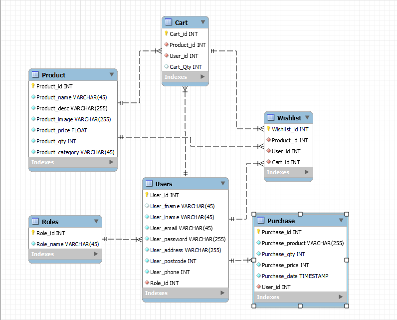
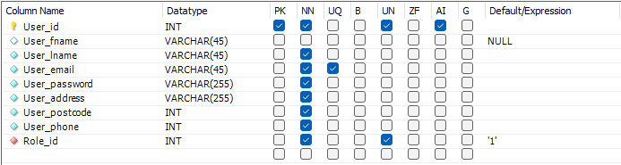
Profile Sign Up and Login Flowchart
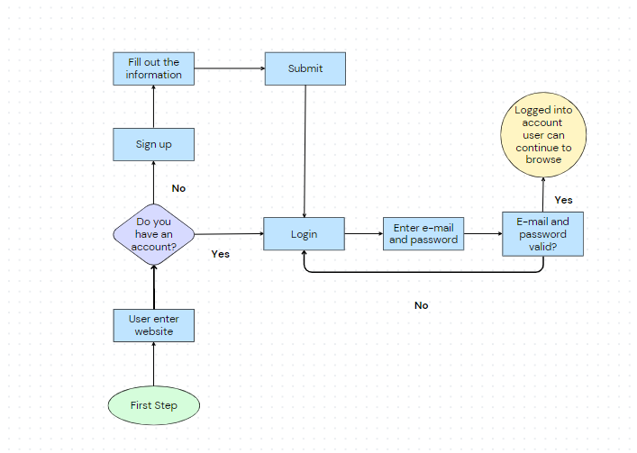
Shopping Flowchart
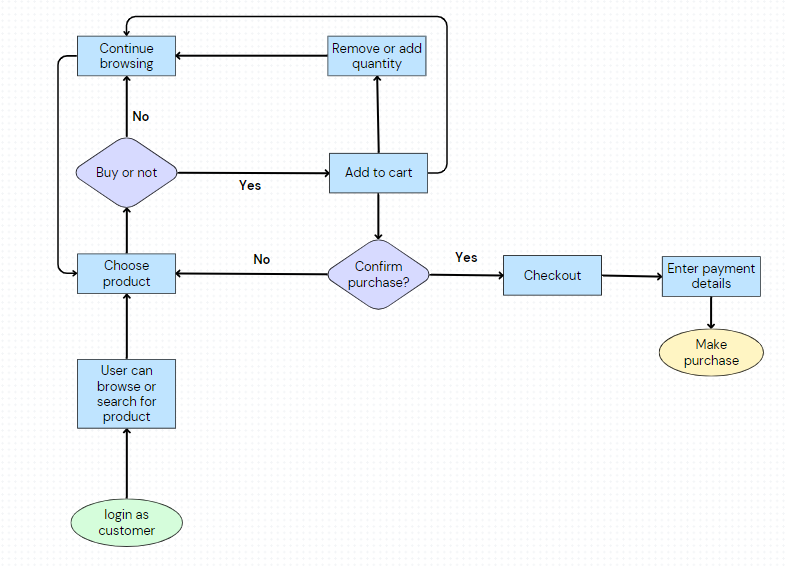
Admin Flowchart
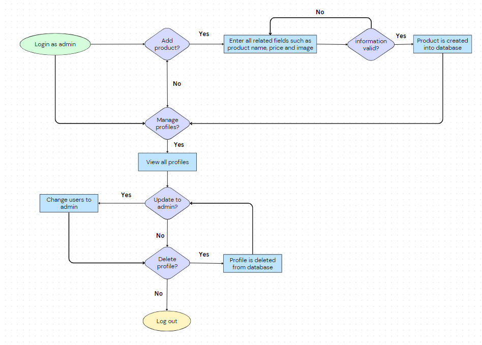
Code Sample for Insert and Update of Cart
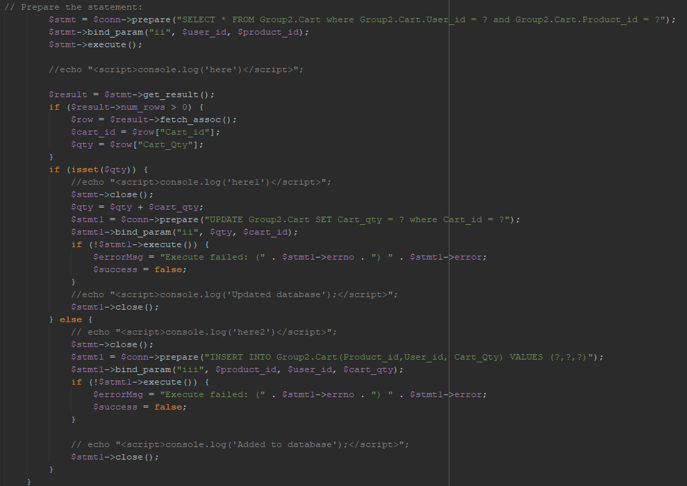
Code Sample for Search and Filter by Category
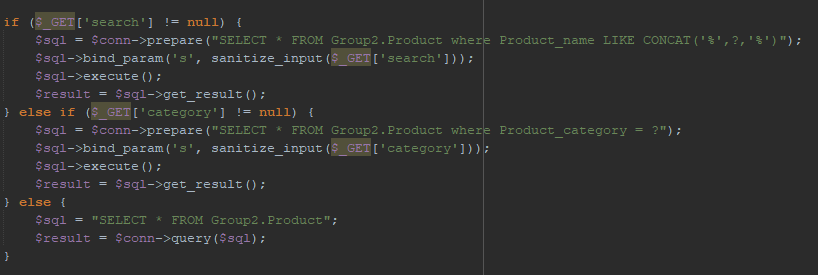
Landing Page
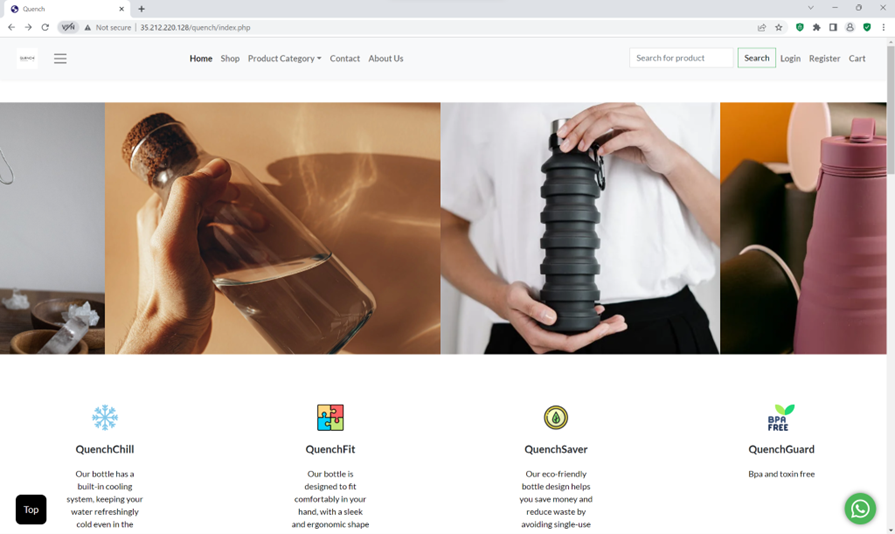
Register Page
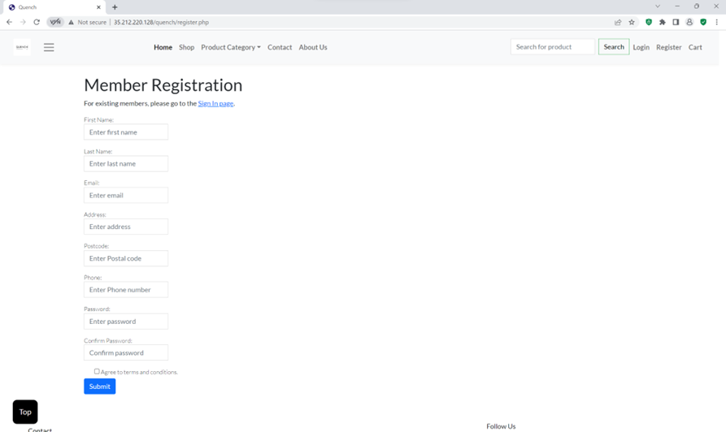
Shop Page
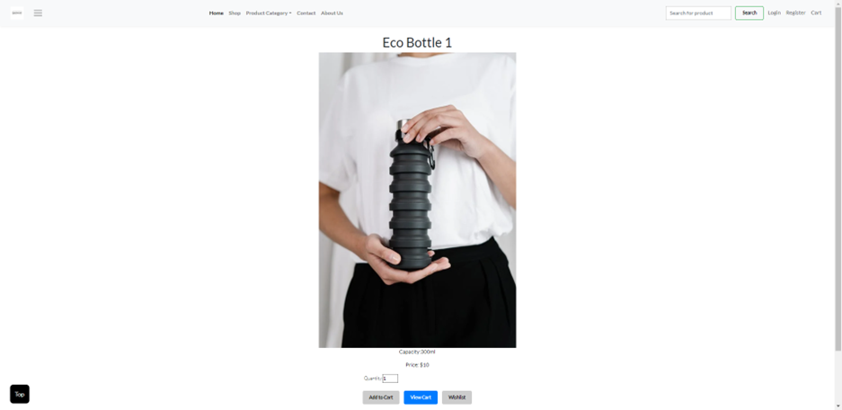
Cart Page
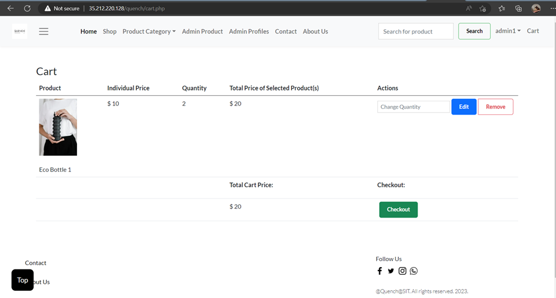
Payment Page
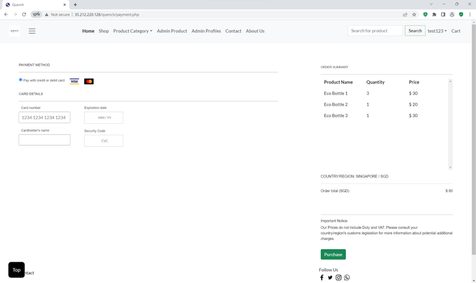
Purchase History Page
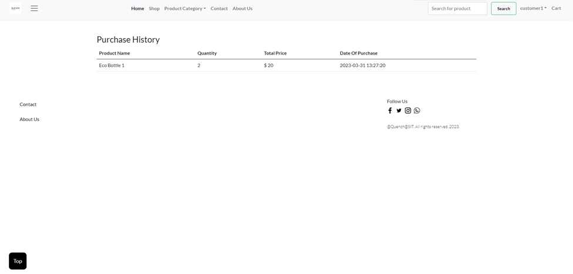
View All Products Page
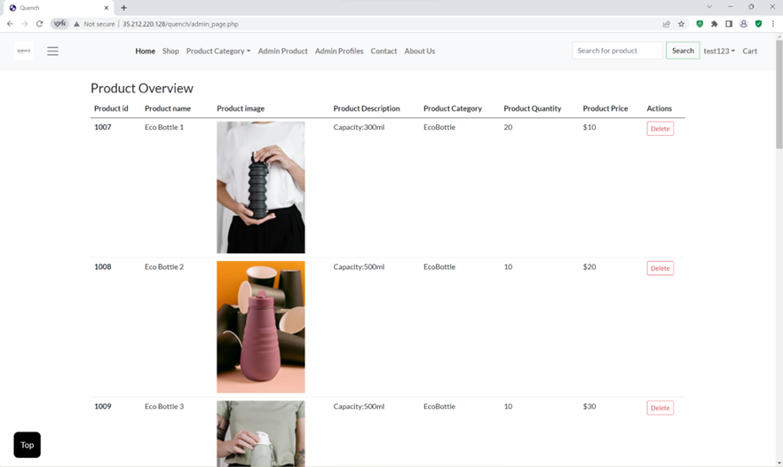
View All Profiles
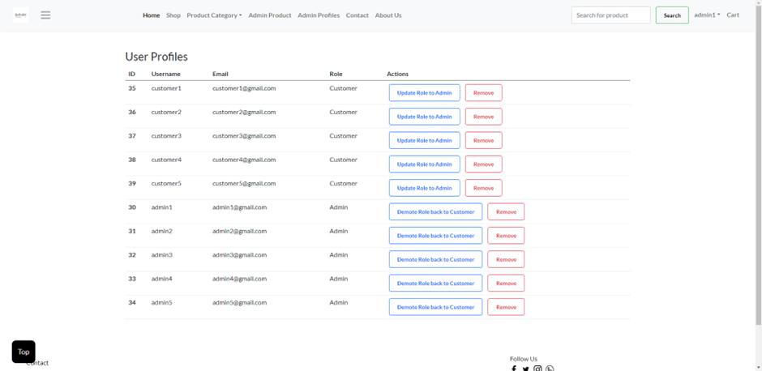
Axe DevTools Scan
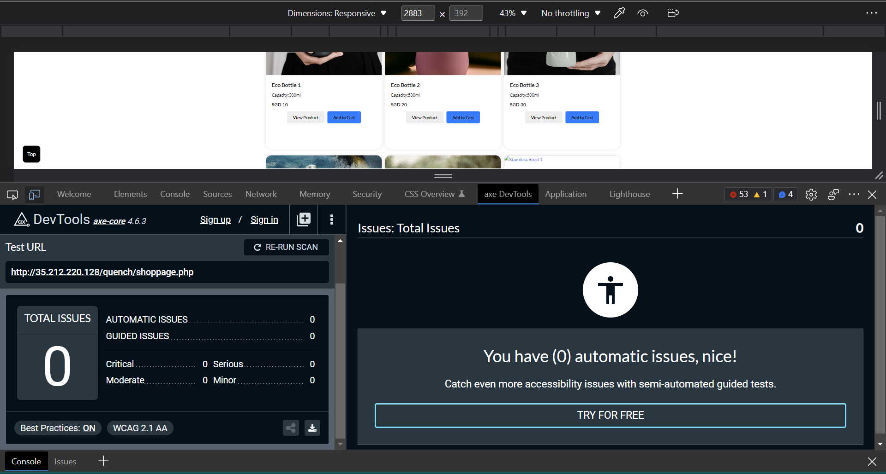
W3C Validator
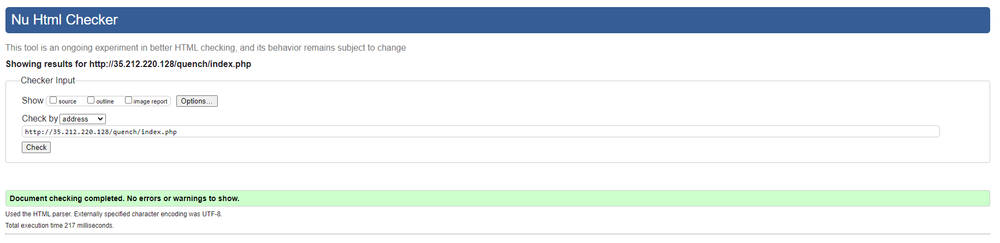
Immuniweb Scan
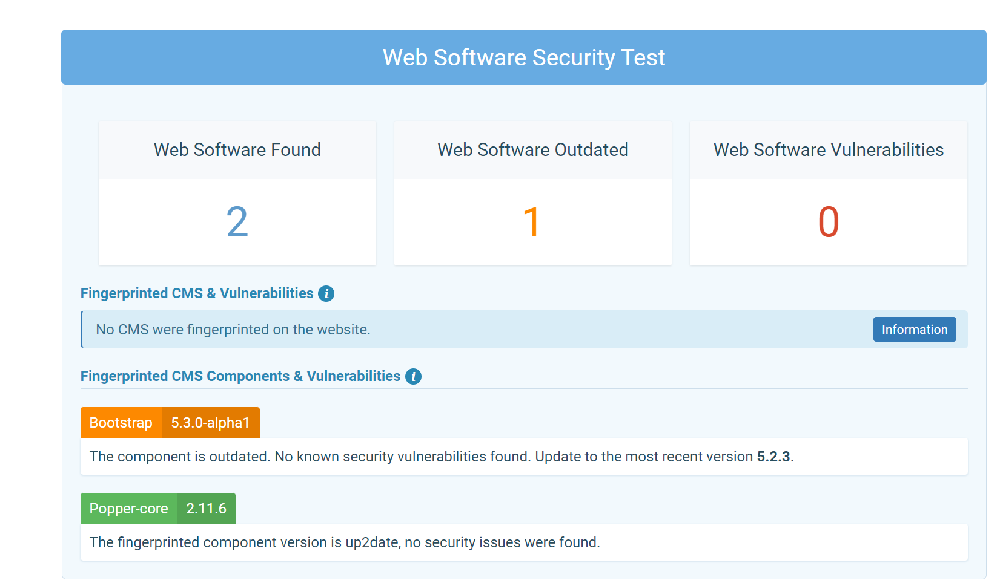